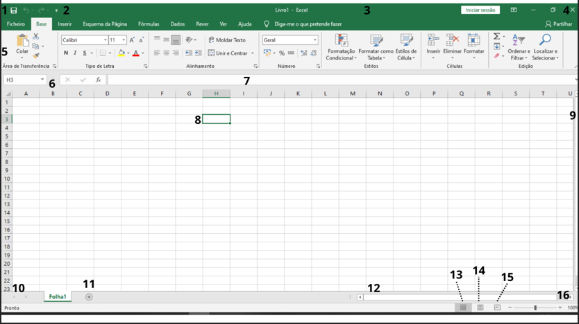
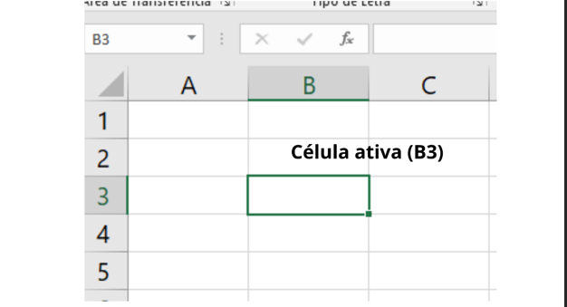
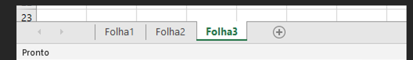
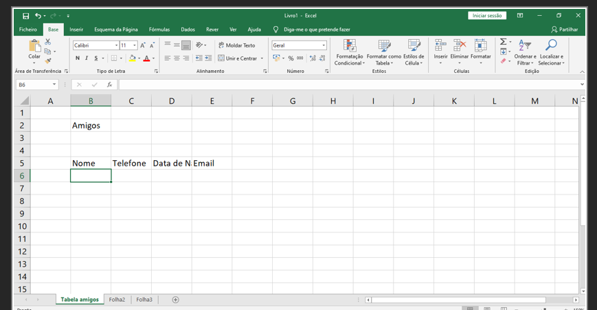
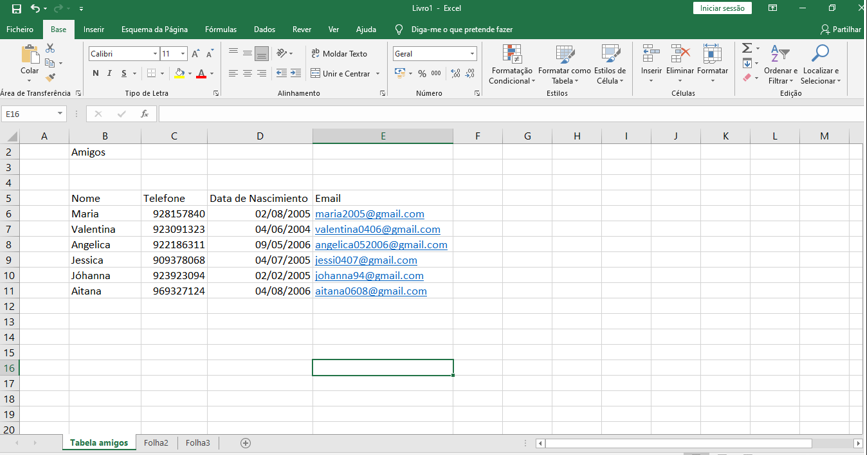
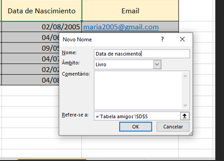
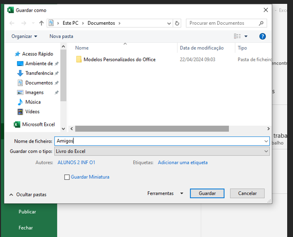

Para além de ser uma excelente ferramenta para a realização de cálculos, dispõe de funcionalidade que facilitam a análise, gestão e partilha de informações de forma diversificadas, com grande rapidez e eficácia.
iniciar a folha de calculo
1. Clica em iniciar.2. Seleciona a opção todos os programas.
3. Seleciona Microsoft Office 2010.
Estrutura geral da folha de cálculo
Para alem da área de trabalho, a janela do Microsoft Excel 2010 é constituída por um conjunto de menus e botões, alguns dos quais comuns ás outras aplicações do Office. 1. Botão do Excel.
2. Barra de ferramenta de acesso rápido.
3. Barra de título.
4. Botões minimizar, maximizar e fechar.
5. Friso constituído por um conjunto de separadores com comandos, organizados por grupos.
6. Caixa de nomes onde é indicado o endereço da célula ativa.
7. Barra de fórmulas.
8. Célula ativa.
9. Barra de deslocação vertical.
10. Botões de movimentação nas folhas.
11. Separadores das folhas.
12. Barra de deslocação horizontal.
13. Modo de visualização da folha normal.
14. Modo de visualização da folha esquema de página.
15. Modo de visualização pré-visualização de quebras de páginas
16. Zoom (ampliar ou reduzir o documento).
Área de trabalho
A área de trabalho de uma folha de cálculo pode ser imaginada como uma enorme tabela, dividida em linhas e colunas, e que as linhas são identificadas por números e as colunas por letras.A interação de uma linha com uma coluna dá origem a uma célula.
Cada célula é identificada por endereço, ou referencia, que resulta da junção da letra identificadora e da coluna com o número identificador da linha.
Chama-se célula ativa a célula que, no momento, esta selecionada e a sua identificação é visível na caixa de nome.

Conceito de livro e folha de cálculo
Um documento de Excel é designado por Livro, no qual podemos inserir e eliminar Folhas de Cálculo para uma melhor organização da informação.Normalmente, cada livro é criado, automaticamente, com três folhas, identificadas por Folha 1, Folha 2 e Folha 3

Movimentação na folha de cálculo
Para te posicionares numa célula coloca o curso sobre ela e prime o botão esquerdo do rato, ou utiliza as teclas a seguir referidas.Criar uma folha de cálculo
O Excel considera como separador decimal o carácter selecionado nas definições regionais, especificadas no Painel de Controlo.Também ao digitar uma data ou hora, o conteúdo da célula é adaptado ao formato selecionado ao formato selecionado nas definições regionais
Introduzir dados nas células
Para escrever numa célula basta selecioná-la (clicar sobre ela) e digitar o que se pretenda.Contudo, se a data introduzida não for válida é tratada como texto Assim: 01-01-2013 é uma data válida
29-02-2013 não é uma data válida Nota: Quando o texto é demasiado extenso, pode acontecer que, se a célula mais á direita não tiver conteúdo, o texto fique todo visível.
Se a célula mais á direita estiver preenchida, só fica visível o texto que couber na célula.

Alterar a largura das colunas
Pra que toda la informação fique visível e a tabela com um aspeto mais apelativo, podes alterar a largura das colunas.
Alterar a altura das linhas
Para que toda a informação fique visível e a tabela com um aspeto mais apelativo, podes alterar a altura das linhas. 1. Clica no número que identifica a linha.2. Clica no botão direito do rato e, no menu de acesso rápido, seleciona a opção Altura da Linha....
3. Na janela Altura da linha digita o valor.
4. Clica em OK.
Os procedimentos utilizados para alterar a altura das linhas podem ser usa- dos para alterar a largura das colunas.
A única diferença está na seleção da linha ou da coluna.

Atribuir um nome a células
Esta funcionalidade permite atribuir um nome a um conjunto de células.Posteriormente, em funções ou fórmulas, poderás identificar as células apenas pelo nome atribuído.
1. Seleciona as células.
2. No separador Fórmulas, grupo Nomes Definidos, clica em Definir Nome.
3. Digita o nome a atribuir às células.
4. Clica em OK.

Guardar (gravar) a folha de cálculo
Ao gravar uma folha de cálculo há duas situações a considerar:a. É a primeira vez que a folha está a ser gravada ou pretendes guarda-la numa outra localização e/ou com outro nome. Nesta situação, guardar a folha de cálculo implica criar um livro (ficheiro de Excel).
1. Digita a informação formata as colunas.
2. No separador Ficheiro clica em Guardar Como.
3. Seleciona o local onde pretendes guardar a folha de cálculo.
4. Em Nome do ficheiro digita Amigos.
5. Clica em Guardar.
b. Pretendes apenas guardar as alterações mantendo a localização e o seu nome. Guarda a folha de cálculo mantendo a localização e o nome do ficheiro (livro).
